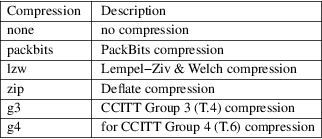

tiffdither − convert a greyscale TIFF image to bilevel using dithering
tiffdither [ options ] input.tif output.tif
tiffdither converts a single channel 8−bit greyscale image to a bilevel image using Floyd−Steinberg error propagation with thresholding.
−c compress
Specify the compression to use for data written to the output file:

By default tiffdither will compress data according to the value of the Compression tag found in the source file.
The CCITT Group 3 and Group 4 compression algorithms can only be used with bilevel data.
Group 3 compression can be specified together with several T.4−specific options: 1d for 1−dimensional encoding, 2d for 2−dimensional encoding, and fill to force each encoded scanline to be zero−filled so that the terminating EOL code lies on a byte boundary. Group 3−specific options are specified by appending a :−separated list to the g3 option; e.g. −c g3:2d:fill to get 2D−encoded data with byte−aligned EOL codes.
LZW compression can be specified together with a predictor value. A predictor value of 2 causes each scanline of the output image to undergo horizontal differencing before it is encoded; a value of 1 forces each scanline to be encoded without differencing. LZW−specific options are specified by appending a :−separated list to the lzw option; e.g. −c lzw:2 for LZW compression with horizontal differencing.
|
−f |
Specify the bit fill order to use in writing output data. By default, tiffdither will create a new file with the same fill order as the original. Specifying −f lsb2msb will force data to be written with the FillOrder tag set to LSB2MSB, while −f msb2lsb will force data to be written with the FillOrder tag set to MSB2LSB. | ||
|
−r |
Make each strip have no more than the given number of rows. | ||
|
−t |
Set the threshold value for dithering. By default the threshold value is 128. |
The dither algorithm is taken from the tiffmedian program (written by Paul Heckbert).
pal2rgb (1), fax2tiff (1), tiffinfo (1), tiffcp (1), tiff2bw (3tiff)
LibTIFF contributors
1988-2022, LibTIFF contributors